← 回股市觀察
盤中觀察 第一次盤中試作
2026/09/15 12:40 即時快照 · 當日盤中成交金額前 50 檔（上市 35＋上櫃 15）· 公開資料整理
45,588.27
加權指數 -274.25 點（-0.60%）
這是盤中快照，不是收盤結果。資料時間 2026-09-15 12:40:54（TWSE MIS 即時行情，上市／上櫃皆 delay=0）。
13:30 收盤（含最後一盤集合競價）會再變動；量能是以「已過交易時間比例」推估（尾盤大量時會低估）；
技術面標籤是把盤中現價代入原本以收盤價設計的規則（日線歷史只到前一交易日 9/14）。
統計範圍：候選池＝20260914 與 20260911 收盤成交值前段（上市 250／上櫃 130）取聯集，共 411 檔；再以今日盤中累計成交金額排序取
上市前 35＋上櫃前 15。漲跌家數是候選池內的數字，不是全市場（即時全市場家數證交所沒有開放端點）。
本頁為公開資料的整理與觀察，不構成投資建議，不報牌、不預測、不下買賣決策。
時程紀錄（第一次盤中分析）
| 階段 | 時間 |
|---|
| 任務開始（含即時資料源探查） | 12:15:15（由 Richard 提出時開始） |
| 分析腳本執行 | 12:40:32 → 12:40:54（22.4 秒） |
| 資料快照時間 | 2026-09-15 12:40:54（行情時間戳 12:40:45） |
| 本頁產出 | 見頁尾版本時間 |
逐階段 log：
| 12:40:32 | START 盤中分析開始 |
| 12:40:32 | ① 抓即時指數（tse_t00 / otc_o00） |
| 12:40:32 | ② 建立候選池（20260914 與 20260911 成交值前段，上市＋上櫃） |
| 12:40:32 | 候選池共 411 檔 |
| 12:40:32 | ③ 抓即時候選池行情 |
| 12:40:54 | 取得即時報價 411 檔 |
| 12:40:54 | 候選池漲跌：漲 97／跌 291／平盤 23（快照時間 12:40:45） |
| 12:40:54 | ④ 選出 50 檔（上市 35＋上櫃 15），門檻 27.04 億 |
| 12:40:54 | ⑤ 抓日線歷史並算技術面 |
| 12:40:54 | ⑥ 產出（50 檔） |
好條件最多的（前 10）
不好條件最多的（前 10）
好條件（8 項）：站上月線、月線向上、底底高、頭頭高、突破頸線、相對大盤強、攻擊量（量增＋上漲）、守住今日高檔（距今日高點 1% 內）。
不好條件（8 項）：跌破前低、今日下跌、相對大盤弱、在月線之下、量增下跌（出貨）、貼近今日低點（1% 內）、跌破昨日低點、月線下彎。
兩邊都是同一組日線資料＋盤中即時價算出來的「符合項目數」，只是把方向相反的條件分開數；
條件數不是評分或推薦，不構成投資建議。
逆勢上漲（加權下跌、個股上漲）（16 上市 9／上櫃 7）
盤中爆量（估量比 ≥ 1.5）（11 上市 6／上櫃 5）
跌破前低（線型轉弱）（14 上市 12／上櫃 2）
今日疲弱（跌幅前 10）（10 上市 9／上櫃 1）
逐檔（50 檔，依盤中成交金額排序）
台達電 2308 上市
1685 +65.0（+4.01%）
底部墊高、未過前高 盤中成交值 204.32 億・全榜第 1 名（上市第 1 名）・相對大盤 +4.61
好條件 3/8：底底高、相對大盤強、攻擊量（量增＋上漲）
不好條件 3/8：跌破前低、在月線之下、月線下彎
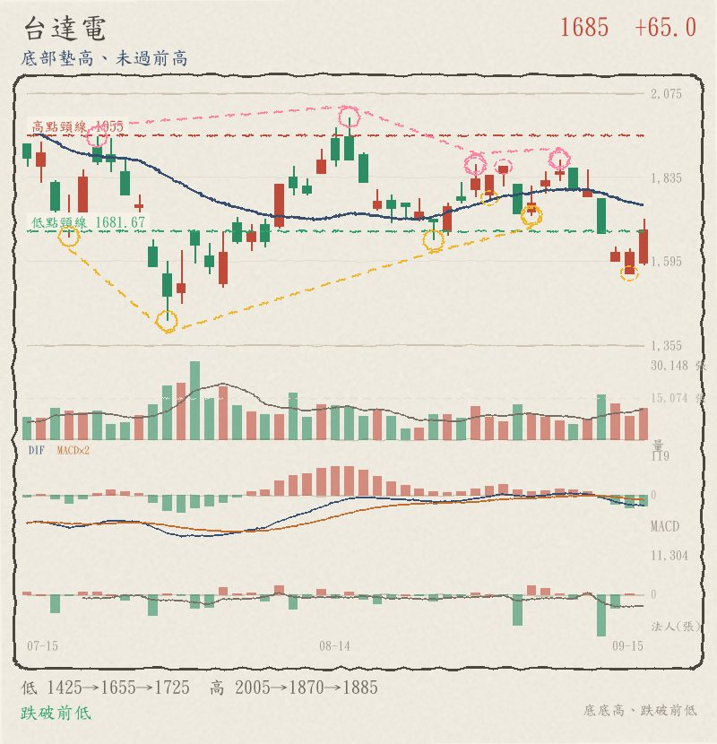
2026/09/15 12:40 盤中 1685（+4.01%），相對加權指數 +4.61 個百分點；盤中累計成交值 204.32 億（全榜第 1 名，上市第 1 名）。以交易時間比例推估的今日成交量約為 20 日均量的 1.58 倍（爆量）。日線結構：底部墊高、未過前高；現價在月線 1763 之下（-4.4%）。距前一日（9/14）高點 +3.37%，距今日高點 -1.75%、距今日低點 +6.31%。圖為日線，最後一根是今日 12:40 為止的進行中 K 棒。
↑ 回上方清單
台積電 2330 上市
2380 +0.0（+0.00%）
底部墊高、未過前高 盤中成交值 202.97 億・全榜第 2 名（上市第 2 名）・相對大盤 +0.60
好條件 3/8：月線向上、底底高、相對大盤強
不好條件 1/8：在月線之下
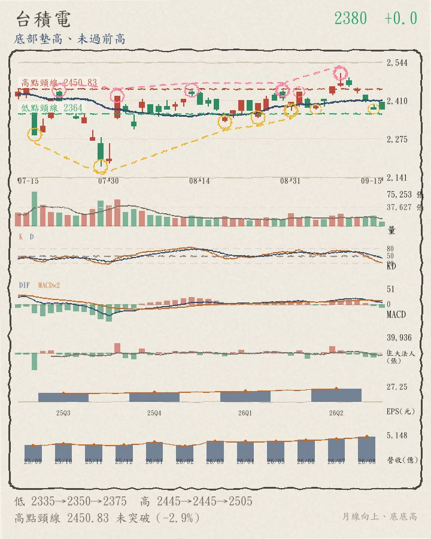
2026/09/15 12:40 盤中 2380（+0.00%），相對加權指數 +0.60 個百分點；盤中累計成交值 202.97 億（全榜第 2 名，上市第 2 名）。以交易時間比例推估的今日成交量約為 20 日均量的 0.61 倍（量縮）。日線結構：底部墊高、未過前高；現價在月線 2410 之下（-1.2%）。距前一日（9/14）高點 -0.63%，距今日高點 -1.04%、距今日低點 +0.00%。圖為日線，最後一根是今日 12:40 為止的進行中 K 棒。
↑ 回上方清單
聯發科 2454 上市
4480 -80.0（-1.75%）
高點墊高、底部不穩 盤中成交值 191.48 億・全榜第 3 名（上市第 3 名）・相對大盤 -1.15
好條件 4/8：站上月線、月線向上、頭頭高、突破頸線
不好條件 3/8：今日下跌、相對大盤弱、貼近今日低點（1% 內）
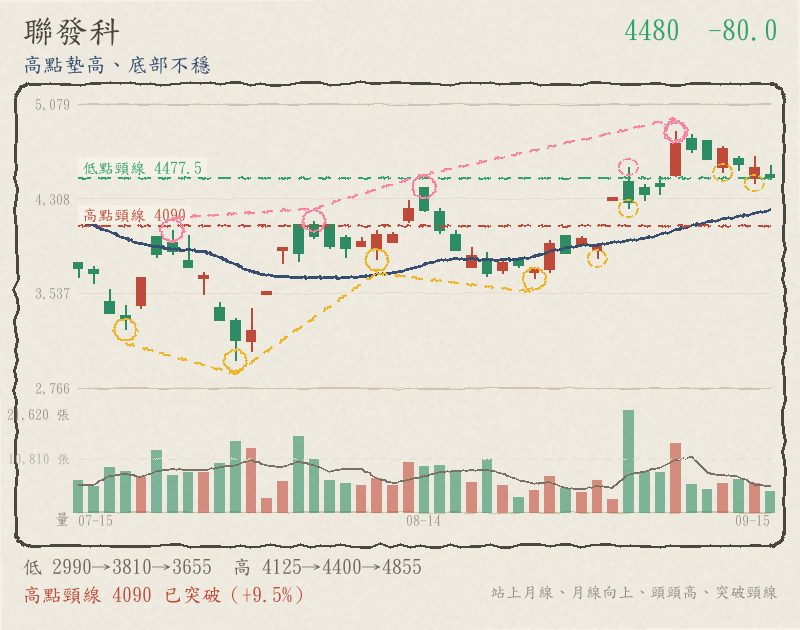
2026/09/15 12:40 盤中 4480（-1.75%），相對加權指數 -1.15 個百分點；盤中累計成交值 191.48 億（全榜第 3 名，上市第 3 名）。以交易時間比例推估的今日成交量約為 20 日均量的 0.69 倍（量縮）。日線結構：高點墊高、底部不穩；現價在月線 4187.25 之上（+7.0%）。距前一日（9/14）高點 -3.66%，距今日高點 -2.08%、距今日低點 +0.34%。圖為日線，最後一根是今日 12:40 為止的進行中 K 棒。
↑ 回上方清單
大立光 3008 上市
6115 +120.0（+2.00%）
上升趨勢（底底高＋頭頭高） 盤中成交值 147.74 億・全榜第 4 名（上市第 4 名）・相對大盤 +2.60
好條件 5/8：月線向上、底底高、頭頭高、相對大盤強、攻擊量（量增＋上漲）
不好條件 2/8：跌破前低、在月線之下
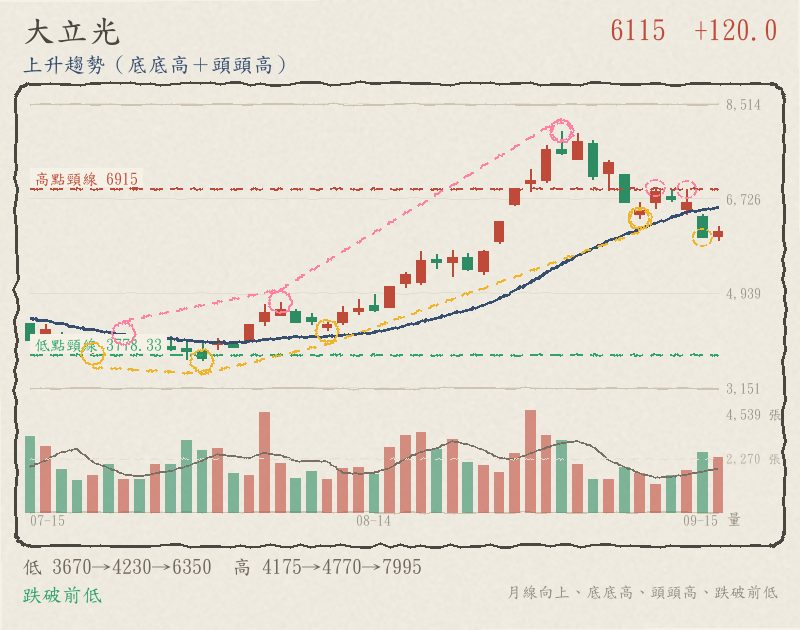
2026/09/15 12:40 盤中 6115（+2.00%），相對加權指數 +2.60 個百分點；盤中累計成交值 147.74 億（全榜第 4 名，上市第 4 名）。以交易時間比例推估的今日成交量約為 20 日均量的 1.21 倍（量增）。日線結構：上升趨勢（底底高＋頭頭高）；現價在月線 6516.75 之下（-6.2%）。距前一日（9/14）高點 -4.75%，距今日高點 -1.29%、距今日低點 +3.12%。圖為日線，最後一根是今日 12:40 為止的進行中 K 棒。
↑ 回上方清單
穩懋 3105 上櫃
453.5 +9.5（+2.14%）
區間或轉弱 盤中成交值 141.6 億・全榜第 5 名（上櫃第 1 名）・相對大盤 +2.74
好條件 4/8：站上月線、月線向上、相對大盤強、攻擊量（量增＋上漲）
不好條件 0/8：無
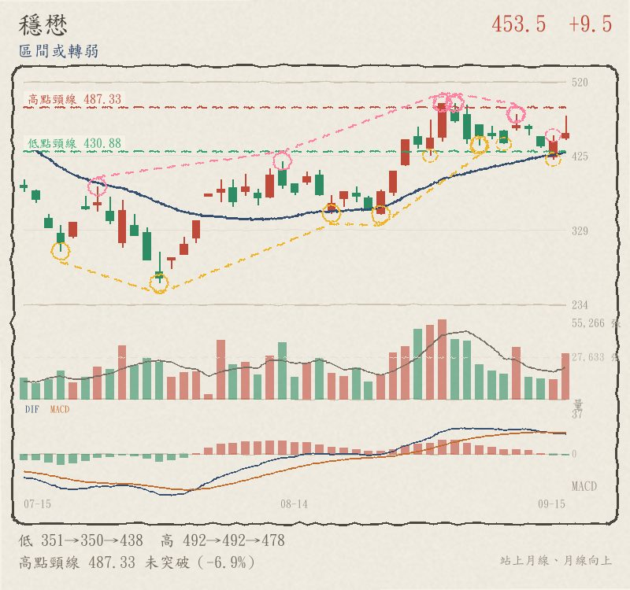
2026/09/15 12:40 盤中 453.5（+2.14%），相對加權指數 +2.74 個百分點；盤中累計成交值 141.6 億（全榜第 5 名，上櫃第 1 名）。以交易時間比例推估的今日成交量約為 20 日均量的 1.35 倍（量增）。日線結構：區間或轉弱；現價在月線 425.875 之上（+6.5%）。距前一日（9/14）高點 +0.55%，距今日高點 -4.73%、距今日低點 +1.80%。圖為日線，最後一根是今日 12:40 為止的進行中 K 棒。
↑ 回上方清單
南亞科 2408 上市
469 -4.0（-0.85%）
區間或轉弱 盤中成交值 116.48 億・全榜第 6 名（上市第 5 名）・相對大盤 -0.25
好條件 1/8：月線向上
不好條件 6/8：跌破前低、今日下跌、相對大盤弱、在月線之下、貼近今日低點（1% 內）、跌破昨日低點
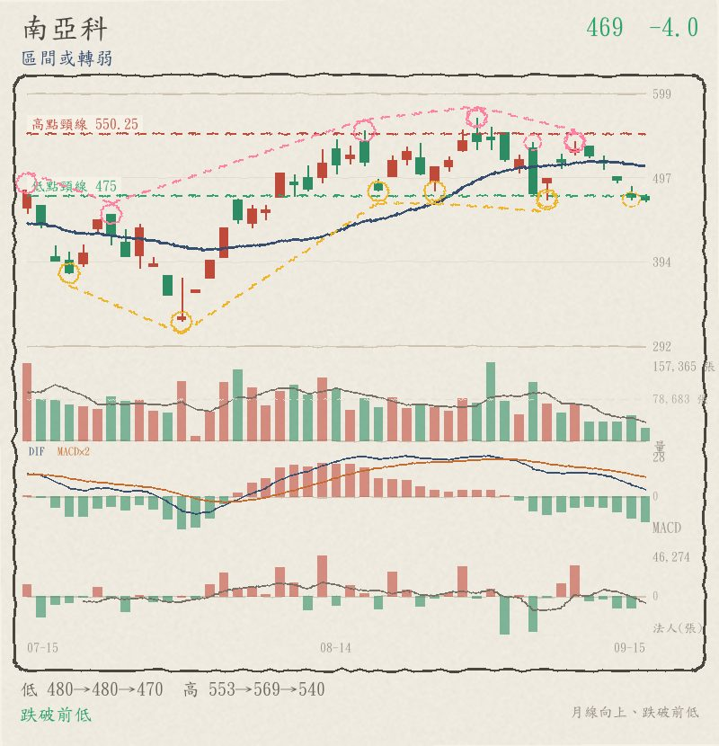
2026/09/15 12:40 盤中 469（-0.85%），相對加權指數 -0.25 個百分點；盤中累計成交值 116.48 億（全榜第 6 名，上市第 5 名）。以交易時間比例推估的今日成交量約為 20 日均量的 0.42 倍（量縮）。日線結構：區間或轉弱；現價在月線 512.725 之下（-8.5%）。距前一日（9/14）高點 -3.50%，距今日高點 -1.57%、距今日低點 +0.43%。圖為日線，最後一根是今日 12:40 為止的進行中 K 棒。
↑ 回上方清單
健策 3653 上市
5330 -490.0（-8.42%）
底部墊高、未過前高 盤中成交值 113.37 億・全榜第 7 名（上市第 6 名）・相對大盤 -7.82
好條件 2/8：月線向上、底底高
不好條件 6/8：跌破前低、今日下跌、相對大盤弱、在月線之下、量增下跌（出貨）、跌破昨日低點
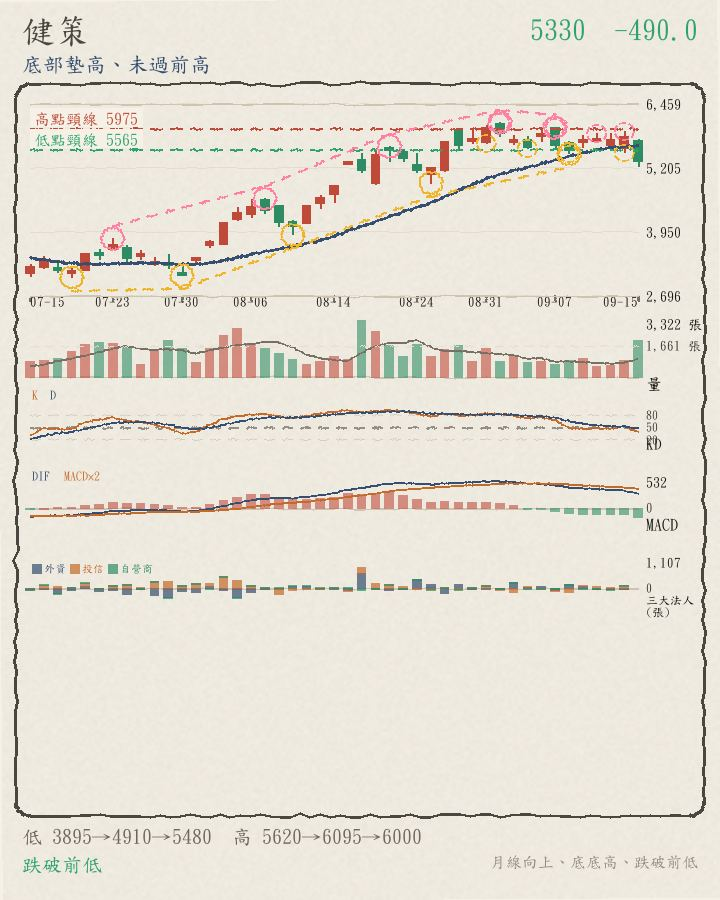
2026/09/15 12:40 盤中 5330（-8.42%），相對加權指數 -7.82 個百分點；盤中累計成交值 113.37 億（全榜第 7 名，上市第 6 名）。以交易時間比例推估的今日成交量約為 20 日均量的 1.93 倍（爆量）。日線結構：底部墊高、未過前高；現價在月線 5629.75 之下（-5.3%）。距前一日（9/14）高點 -9.97%，距今日高點 -7.55%、距今日低點 +1.72%。圖為日線，最後一根是今日 12:40 為止的進行中 K 棒。
↑ 回上方清單
頎邦 6147 上櫃
200.5 +11.5（+6.08%）
區間或轉弱 盤中成交值 110.33 億・全榜第 8 名（上櫃第 2 名）・相對大盤 +6.68
好條件 5/8：站上月線、月線向上、突破頸線、相對大盤強、攻擊量（量增＋上漲）
不好條件 0/8：無
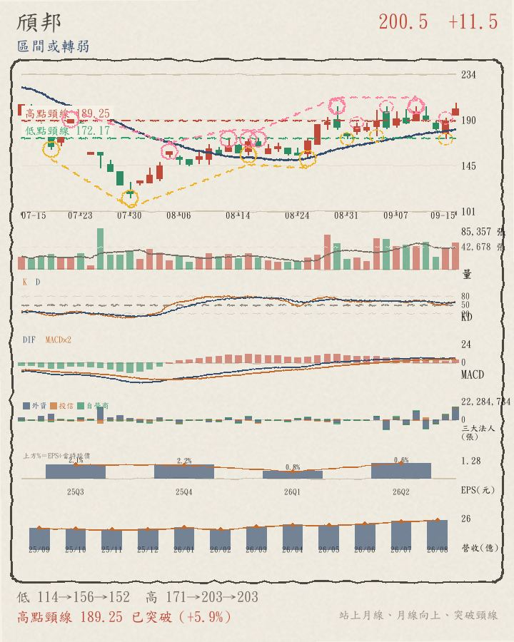
2026/09/15 12:40 盤中 200.5（+6.08%），相對加權指數 +6.68 個百分點；盤中累計成交值 110.33 億（全榜第 8 名，上櫃第 2 名）。以交易時間比例推估的今日成交量約為 20 日均量的 1.91 倍（爆量）。日線結構：區間或轉弱；現價在月線 178.775 之上（+12.2%）。距前一日（9/14）高點 +4.70%，距今日高點 -2.91%、距今日低點 +3.08%。圖為日線，最後一根是今日 12:40 為止的進行中 K 棒。
↑ 回上方清單
聯電 2303 上市
139 -3.5（-2.46%）
底部墊高、未過前高 盤中成交值 109.55 億・全榜第 9 名（上市第 7 名）・相對大盤 -1.86
好條件 4/8：站上月線、月線向上、底底高、突破頸線
不好條件 3/8：今日下跌、相對大盤弱、貼近今日低點（1% 內）
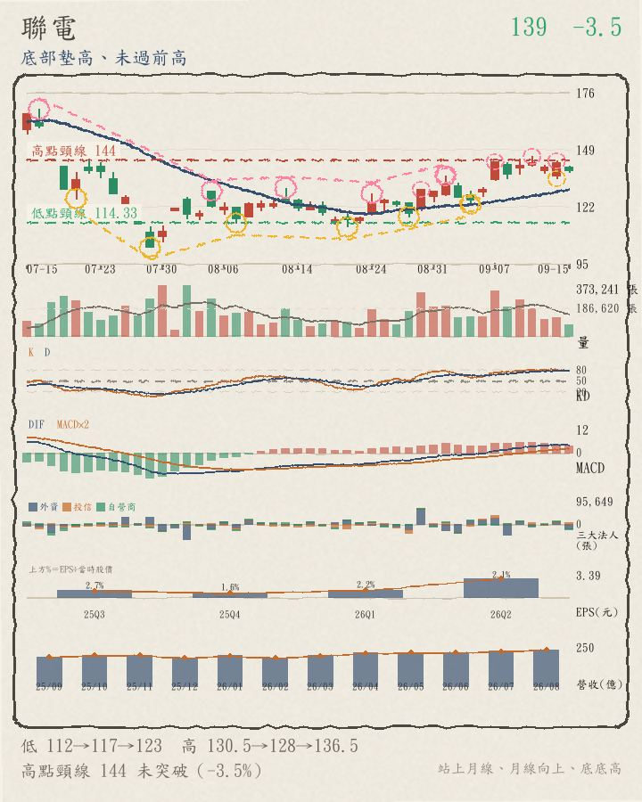
2026/09/15 12:40 盤中 139（-2.46%），相對加權指數 -1.86 個百分點；盤中累計成交值 109.55 億（全榜第 9 名，上市第 7 名）。以交易時間比例推估的今日成交量約為 20 日均量的 0.58 倍（量縮）。日線結構：底部墊高、未過前高；現價在月線 128.825 之上（+7.9%）。距前一日（9/14）高點 -3.14%，距今日高點 -1.42%、距今日低點 +0.72%。圖為日線，最後一根是今日 12:40 為止的進行中 K 棒。
↑ 回上方清單
創意 3443 上市
6155 -245.0（-3.83%）
高點墊高、底部不穩 盤中成交值 104.02 億・全榜第 10 名（上市第 8 名）・相對大盤 -3.23
好條件 3/8：站上月線、月線向上、頭頭高
不好條件 3/8：今日下跌、相對大盤弱、貼近今日低點（1% 內）
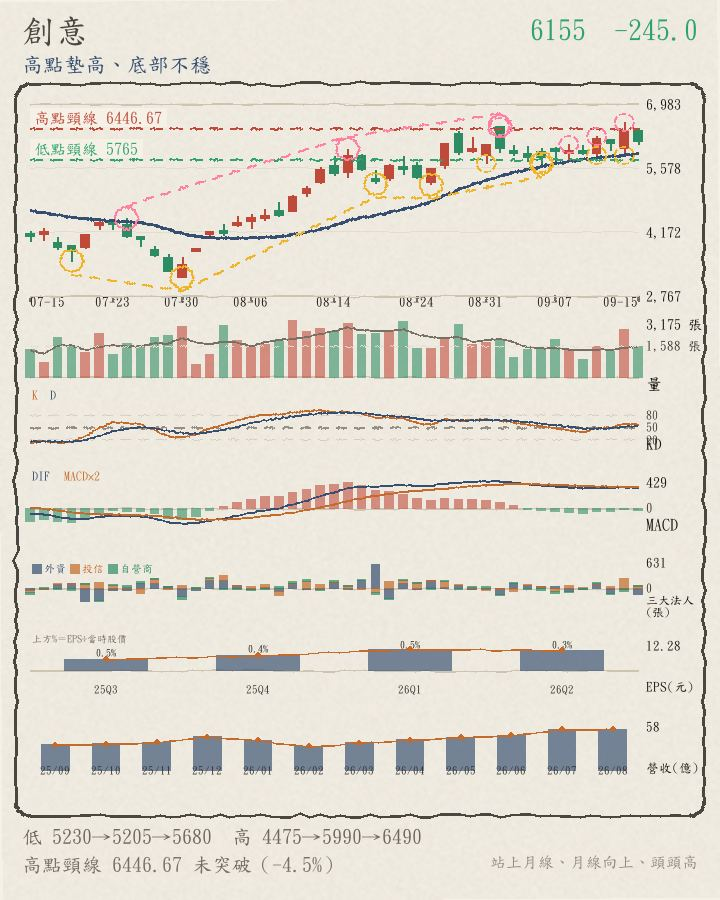
2026/09/15 12:40 盤中 6155（-3.83%），相對加權指數 -3.23 個百分點；盤中累計成交值 104.02 億（全榜第 10 名，上市第 8 名）。以交易時間比例推估的今日成交量約為 20 日均量的 1.05 倍（量平）。日線結構：高點墊高、底部不穩；現價在月線 5861 之上（+5.0%）。距前一日（9/14）高點 -6.39%，距今日高點 -4.65%、距今日低點 +0.98%。圖為日線，最後一根是今日 12:40 為止的進行中 K 棒。
↑ 回上方清單
金居 8358 上櫃
486 -32.0（-6.18%）
底部墊高、未過前高 盤中成交值 99.98 億・全榜第 11 名（上櫃第 3 名）・相對大盤 -5.58
好條件 3/8：站上月線、月線向上、底底高
不好條件 4/8：今日下跌、相對大盤弱、量增下跌（出貨）、貼近今日低點（1% 內）
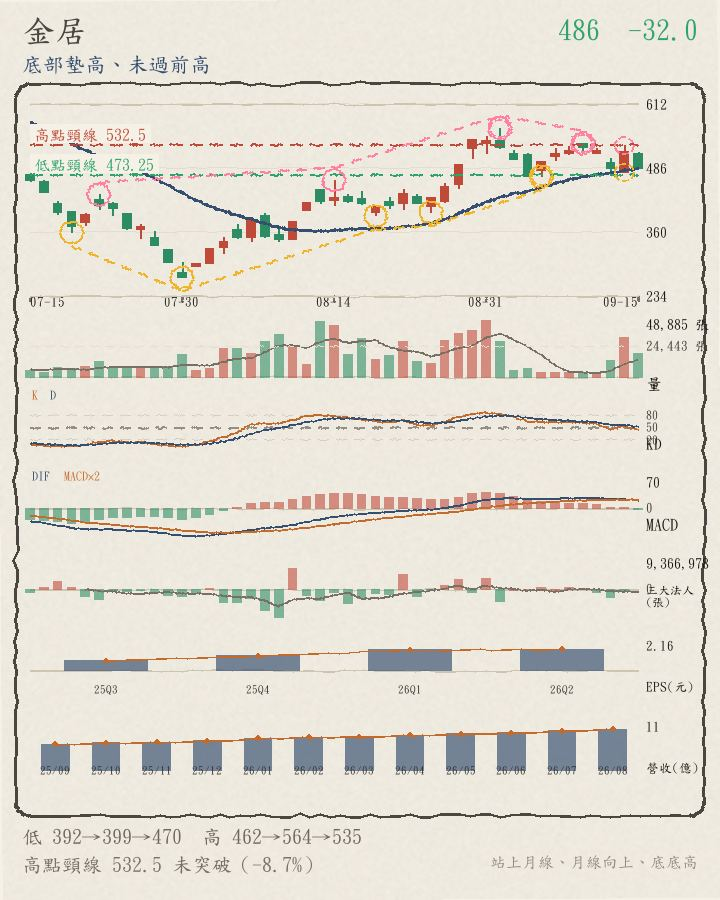
2026/09/15 12:40 盤中 486（-6.18%），相對加權指數 -5.58 個百分點；盤中累計成交值 99.98 億（全榜第 11 名，上櫃第 3 名）。以交易時間比例推估的今日成交量約為 20 日均量的 1.35 倍（量增）。日線結構：底部墊高、未過前高；現價在月線 481.625 之上（+0.9%）。距前一日（9/14）高點 -8.30%，距今日高點 -5.81%、距今日低點 +0.21%。圖為日線，最後一根是今日 12:40 為止的進行中 K 棒。
↑ 回上方清單
南亞 1303 上市
221.5 -12.5（-5.34%）
底部墊高、未過前高 盤中成交值 92.31 億・全榜第 12 名（上市第 9 名）・相對大盤 -4.74
好條件 3/8：站上月線、月線向上、底底高
不好條件 3/8：今日下跌、相對大盤弱、貼近今日低點（1% 內）
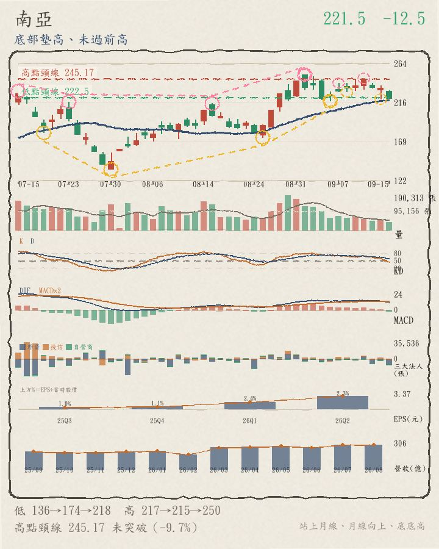
2026/09/15 12:40 盤中 221.5（-5.34%），相對加權指數 -4.74 個百分點；盤中累計成交值 92.31 億（全榜第 12 名，上市第 9 名）。以交易時間比例推估的今日成交量約為 20 日均量的 0.54 倍（量縮）。日線結構：底部墊高、未過前高；現價在月線 218.225 之上（+1.5%）。距前一日（9/14）高點 -6.34%，距今日高點 -3.90%、距今日低點 +0.23%。圖為日線，最後一根是今日 12:40 為止的進行中 K 棒。
↑ 回上方清單
國巨* 2327 上市
543 -2.0（-0.37%）
區間或轉弱 盤中成交值 91.79 億・全榜第 13 名（上市第 10 名）・相對大盤 +0.23
好條件 1/8：相對大盤強
不好條件 4/8：今日下跌、在月線之下、貼近今日低點（1% 內）、月線下彎
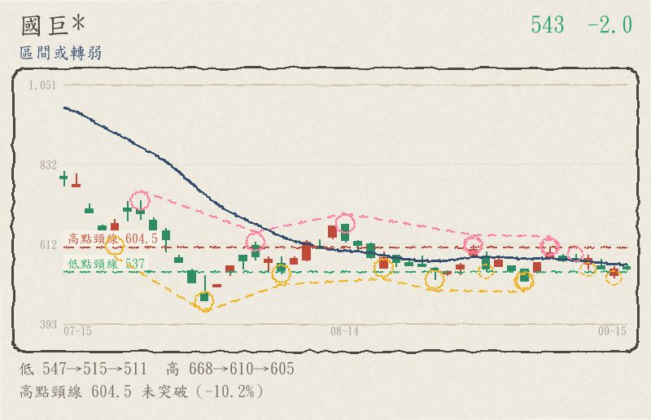
2026/09/15 12:40 盤中 543（-0.37%），相對加權指數 +0.23 個百分點；盤中累計成交值 91.79 億（全榜第 13 名，上市第 10 名）。以交易時間比例推估的今日成交量約為 20 日均量的 0.5 倍（量縮）。日線結構：區間或轉弱；現價在月線 558 之下（-2.7%）。距前一日（9/14）高點 -1.27%，距今日高點 -2.69%、距今日低點 +0.18%。圖為日線，最後一根是今日 12:40 為止的進行中 K 棒。
量縮
↑ 回上方清單
華邦電 2344 上市
160 +0.0（+0.00%）
區間或轉弱 盤中成交值 88.47 億・全榜第 14 名（上市第 11 名）・相對大盤 +0.60
好條件 1/8：相對大盤強
不好條件 4/8：跌破前低、在月線之下、貼近今日低點（1% 內）、月線下彎
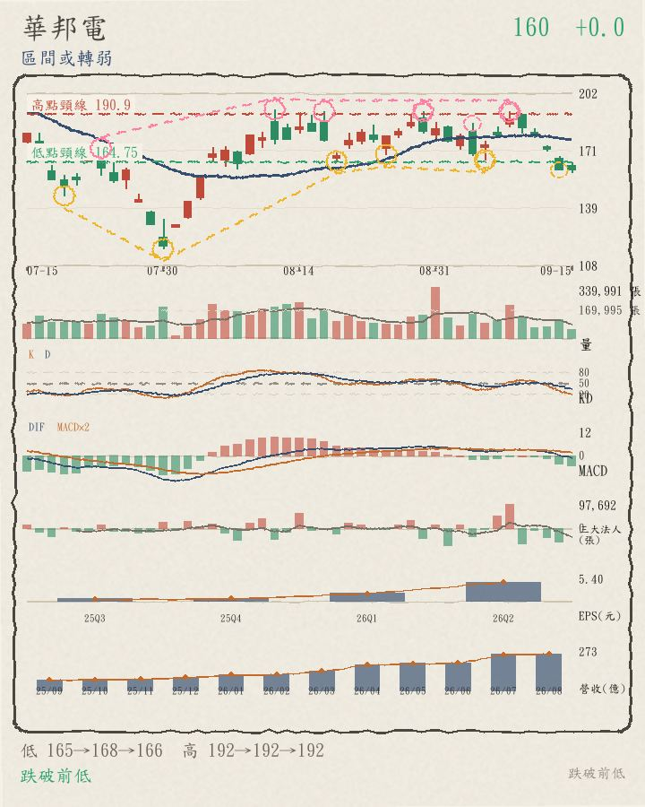
2026/09/15 12:40 盤中 160（+0.00%），相對加權指數 +0.60 個百分點；盤中累計成交值 88.47 億（全榜第 14 名，上市第 11 名）。以交易時間比例推估的今日成交量約為 20 日均量的 0.51 倍（量縮）。日線結構：區間或轉弱；現價在月線 177.475 之下（-9.8%）。距前一日（9/14）高點 -4.48%，距今日高點 -2.44%、距今日低點 +0.95%。圖為日線，最後一根是今日 12:40 為止的進行中 K 棒。
↑ 回上方清單
力積電 6770 上市
67.1 -3.6（-5.09%）
上升趨勢（底底高＋頭頭高） 盤中成交值 81.79 億・全榜第 15 名（上市第 12 名）・相對大盤 -4.49
好條件 2/8：底底高、頭頭高
不好條件 5/8：今日下跌、相對大盤弱、在月線之下、跌破昨日低點、月線下彎
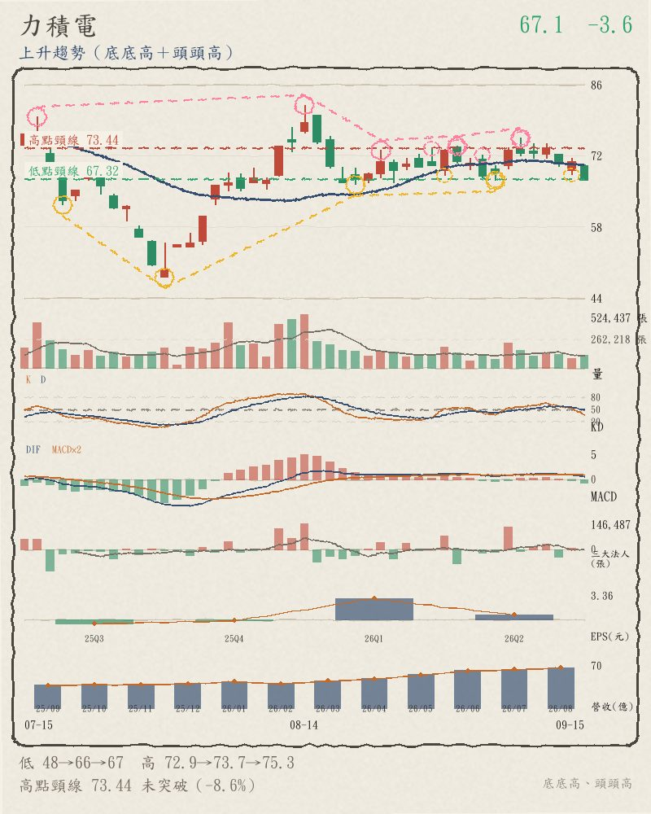
2026/09/15 12:40 盤中 67.1（-5.09%），相對加權指數 -4.49 個百分點；盤中累計成交值 81.79 億（全榜第 15 名，上市第 12 名）。以交易時間比例推估的今日成交量約為 20 日均量的 0.98 倍（量平）。日線結構：上升趨勢（底底高＋頭頭高）；現價在月線 70.235 之下（-4.5%）。距前一日（9/14）高點 -6.02%，距今日高點 -4.28%、距今日低點 +0.00%。圖為日線，最後一根是今日 12:40 為止的進行中 K 棒。
↑ 回上方清單
強茂 2481 上市
153 -6.0（-3.77%）
高點墊高、底部不穩 盤中成交值 73.83 億・全榜第 16 名（上市第 13 名）・相對大盤 -3.17
好條件 3/8：站上月線、月線向上、頭頭高
不好條件 4/8：今日下跌、相對大盤弱、量增下跌（出貨）、貼近今日低點（1% 內）
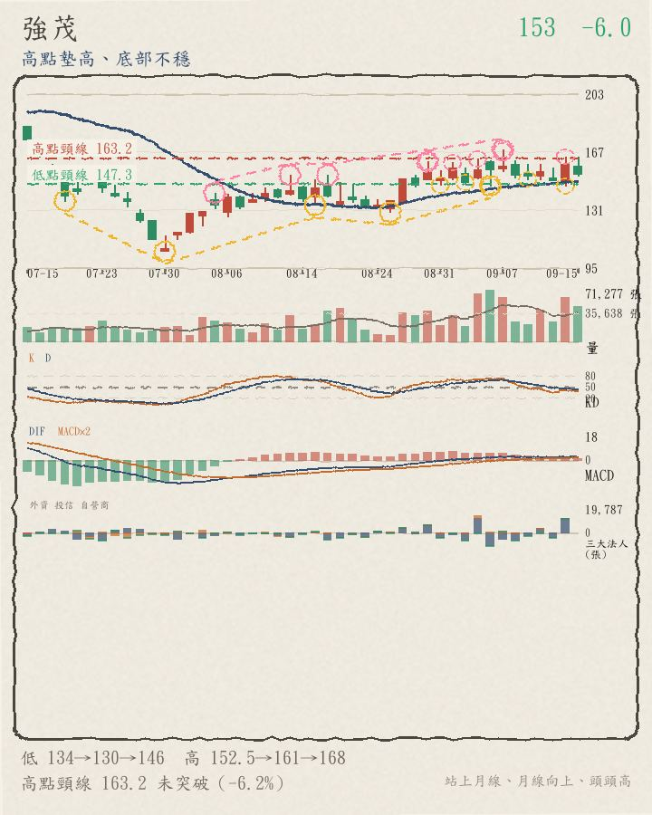
2026/09/15 12:40 盤中 153（-3.77%），相對加權指數 -3.17 個百分點；盤中累計成交值 73.83 億（全榜第 16 名，上市第 13 名）。以交易時間比例推估的今日成交量約為 20 日均量的 1.71 倍（爆量）。日線結構：高點墊高、底部不穩；現價在月線 148.175 之上（+3.3%）。距前一日（9/14）高點 -6.71%，距今日高點 -6.42%、距今日低點 +0.66%。圖為日線，最後一根是今日 12:40 為止的進行中 K 棒。
↑ 回上方清單
台燿 6274 上櫃
1380 -30.0（-2.13%）
區間或轉弱 盤中成交值 73.26 億・全榜第 17 名（上櫃第 4 名）・相對大盤 -1.53
好條件 0/8：無
不好條件 5/8：今日下跌、相對大盤弱、在月線之下、量增下跌（出貨）、月線下彎
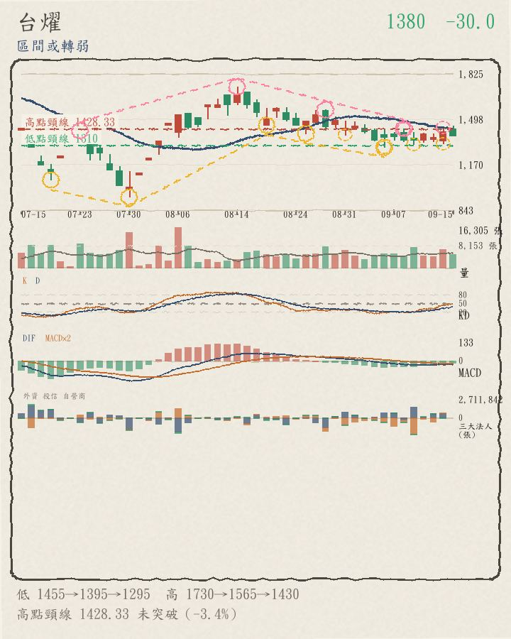
2026/09/15 12:40 盤中 1380（-2.13%），相對加權指數 -1.53 個百分點；盤中累計成交值 73.26 億（全榜第 17 名，上櫃第 4 名）。以交易時間比例推估的今日成交量約為 20 日均量的 1.2 倍（量增）。日線結構：區間或轉弱；現價在月線 1437.75 之下（-4.0%）。距前一日（9/14）高點 -4.17%，距今日高點 -4.83%、距今日低點 +0.00%。圖為日線，最後一根是今日 12:40 為止的進行中 K 棒。
量增
↑ 回上方清單
臻鼎-KY 4958 上市
481 -8.5（-1.74%）
上升趨勢（底底高＋頭頭高） 盤中成交值 69.98 億・全榜第 18 名（上市第 14 名）・相對大盤 -1.14
好條件 4/8：站上月線、月線向上、底底高、頭頭高
不好條件 3/8：今日下跌、相對大盤弱、貼近今日低點（1% 內）
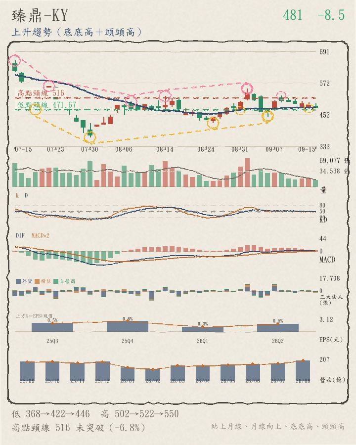
2026/09/15 12:40 盤中 481（-1.74%），相對加權指數 -1.14 個百分點；盤中累計成交值 69.98 億（全榜第 18 名，上市第 14 名）。以交易時間比例推估的今日成交量約為 20 日均量的 0.6 倍（量縮）。日線結構：上升趨勢（底底高＋頭頭高）；現價在月線 479.05 之上（+0.4%）。距前一日（9/14）高點 -3.41%，距今日高點 -2.53%、距今日低點 +0.52%。圖為日線，最後一根是今日 12:40 為止的進行中 K 棒。
↑ 回上方清單
南電 8046 上市
1090 +35.0（+3.32%）
區間或轉弱 盤中成交值 69.49 億・全榜第 19 名（上市第 15 名）・相對大盤 +3.92
好條件 1/8：相對大盤強
不好條件 2/8：在月線之下、月線下彎
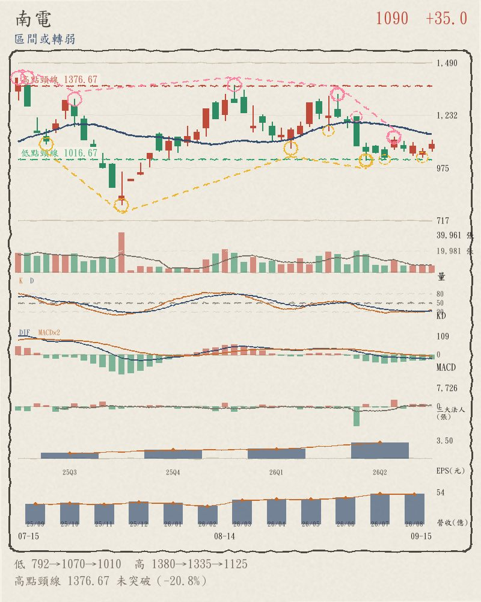
2026/09/15 12:40 盤中 1090（+3.32%），相對加權指數 +3.92 個百分點；盤中累計成交值 69.49 億（全榜第 19 名，上市第 15 名）。以交易時間比例推估的今日成交量約為 20 日均量的 0.65 倍（量縮）。日線結構：區間或轉弱；現價在月線 1147.25 之下（-5.0%）。距前一日（9/14）高點 +1.87%，距今日高點 -1.80%、距今日低點 +3.32%。圖為日線，最後一根是今日 12:40 為止的進行中 K 棒。
↑ 回上方清單
奇鋐 3017 上市
3125 -185.0（-5.59%）
上升趨勢（底底高＋頭頭高） 盤中成交值 69.38 億・全榜第 20 名（上市第 16 名）・相對大盤 -4.99
好條件 3/8：月線向上、底底高、頭頭高
不好條件 6/8：跌破前低、今日下跌、相對大盤弱、在月線之下、貼近今日低點（1% 內）、跌破昨日低點
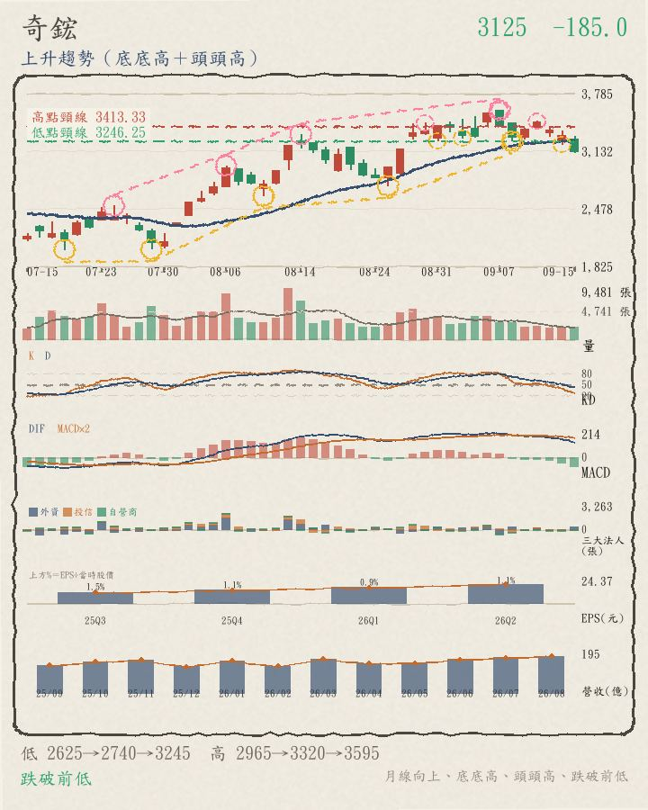
2026/09/15 12:40 盤中 3125（-5.59%），相對加權指數 -4.99 個百分點；盤中累計成交值 69.38 億（全榜第 20 名，上市第 16 名）。以交易時間比例推估的今日成交量約為 20 日均量的 0.82 倍（量平）。日線結構：上升趨勢（底底高＋頭頭高）；現價在月線 3244 之下（-3.7%）。距前一日（9/14）高點 -6.99%，距今日高點 -5.30%、距今日低點 +0.16%。圖為日線，最後一根是今日 12:40 為止的進行中 K 棒。
↑ 回上方清單
玉晶光 3406 上市
931 -23.0（-2.41%）
上升趨勢（底底高＋頭頭高） 盤中成交值 69.11 億・全榜第 21 名（上市第 17 名）・相對大盤 -1.81
好條件 4/8：站上月線、月線向上、底底高、頭頭高
不好條件 5/8：跌破前低、今日下跌、相對大盤弱、量增下跌（出貨）、跌破昨日低點
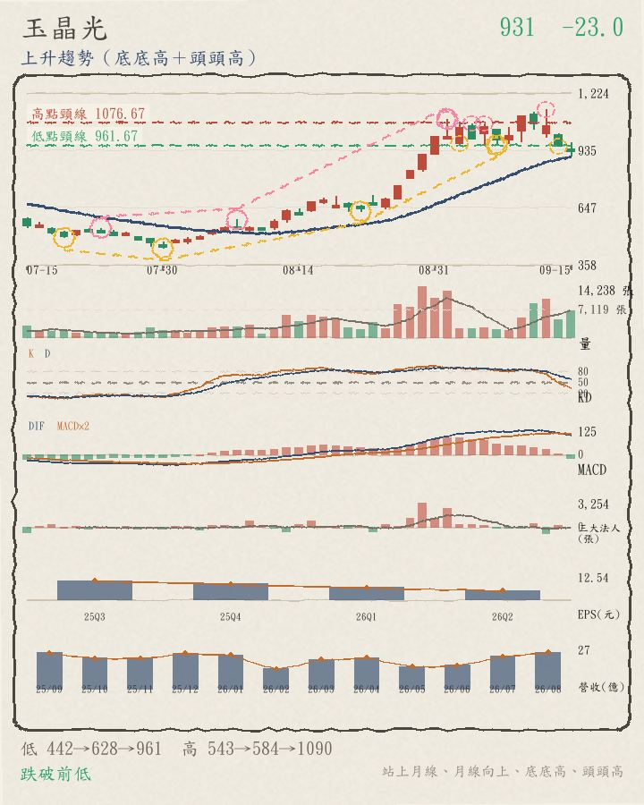
2026/09/15 12:40 盤中 931（-2.41%），相對加權指數 -1.81 個百分點；盤中累計成交值 69.11 億（全榜第 21 名，上市第 17 名）。以交易時間比例推估的今日成交量約為 20 日均量的 1.52 倍（爆量）。日線結構：上升趨勢（底底高＋頭頭高）；現價在月線 889.9 之上（+4.6%）。距前一日（9/14）高點 -8.73%，距今日高點 -4.32%、距今日低點 +2.76%。圖為日線，最後一根是今日 12:40 為止的進行中 K 棒。
↑ 回上方清單
信昌電 6173 上櫃
291 -2.5（-0.85%）
上升趨勢（底底高＋頭頭高） 盤中成交值 67.59 億・全榜第 22 名（上櫃第 5 名）・相對大盤 -0.25
好條件 5/8：站上月線、月線向上、底底高、頭頭高、突破頸線
不好條件 3/8：今日下跌、相對大盤弱、量增下跌（出貨）
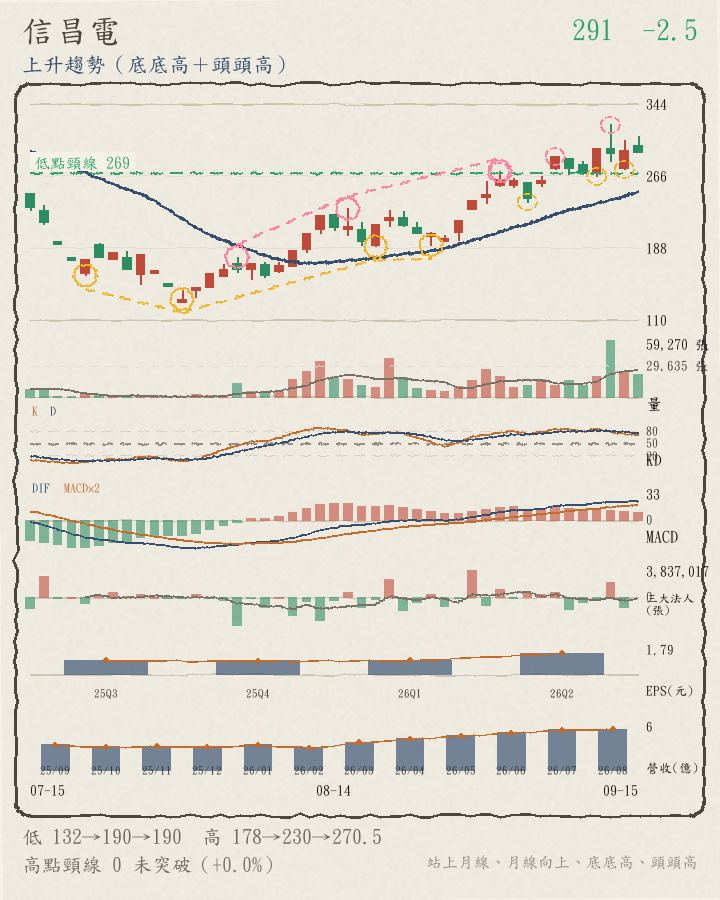
2026/09/15 12:40 盤中 291（-0.85%），相對加權指數 -0.25 個百分點；盤中累計成交值 67.59 億（全榜第 22 名，上櫃第 5 名）。以交易時間比例推估的今日成交量約為 20 日均量的 1.57 倍（爆量）。日線結構：上升趨勢（底底高＋頭頭高）；現價在月線 243.925 之上（+19.3%）。距前一日（9/14）高點 -4.43%，距今日高點 -5.52%、距今日低點 +0.00%。圖為日線，最後一根是今日 12:40 為止的進行中 K 棒。
↑ 回上方清單
欣興 3037 上市
960 -10.0（-1.03%）
區間或轉弱 盤中成交值 64.57 億・全榜第 23 名（上市第 18 名）・相對大盤 -0.43
好條件 0/8：無
不好條件 4/8：今日下跌、相對大盤弱、在月線之下、月線下彎
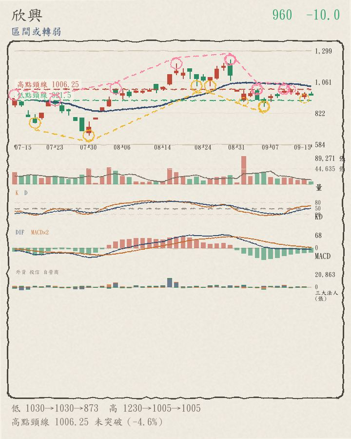
2026/09/15 12:40 盤中 960（-1.03%），相對加權指數 -0.43 個百分點；盤中累計成交值 64.57 億（全榜第 23 名，上市第 18 名）。以交易時間比例推估的今日成交量約為 20 日均量的 0.32 倍（量縮）。日線結構：區間或轉弱；現價在月線 1036.25 之下（-7.4%）。距前一日（9/14）高點 -1.94%，距今日高點 -2.64%、距今日低點 +0.00%。圖為日線，最後一根是今日 12:40 為止的進行中 K 棒。
量縮
↑ 回上方清單
聯一光 3441 上櫃
169.5 +9.0（+5.61%）
上升趨勢（底底高＋頭頭高） 盤中成交值 58.12 億・全榜第 24 名（上櫃第 6 名）・相對大盤 +6.21
好條件 7/8：站上月線、月線向上、底底高、頭頭高、突破頸線、相對大盤強、攻擊量（量增＋上漲）
不好條件 0/8：無
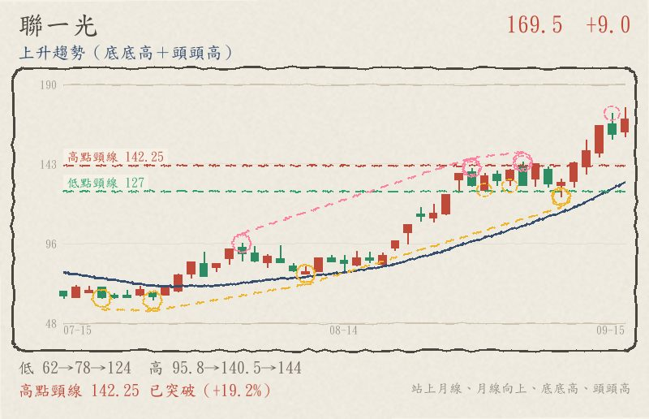
2026/09/15 12:40 盤中 169.5（+5.61%），相對加權指數 +6.21 個百分點；盤中累計成交值 58.12 億（全榜第 24 名，上櫃第 6 名）。以交易時間比例推估的今日成交量約為 20 日均量的 2.39 倍（爆量）。日線結構：上升趨勢（底底高＋頭頭高）；現價在月線 128.175 之上（+32.2%）。距前一日（9/14）高點 -2.02%，距今日高點 -3.97%、距今日低點 +6.60%。圖為日線，最後一根是今日 12:40 為止的進行中 K 棒。
↑ 回上方清單
環球晶 6488 上櫃
913 +13.0（+1.44%）
區間或轉弱 盤中成交值 56.19 億・全榜第 25 名（上櫃第 7 名）・相對大盤 +2.04
好條件 1/8：相對大盤強
不好條件 2/8：在月線之下、月線下彎
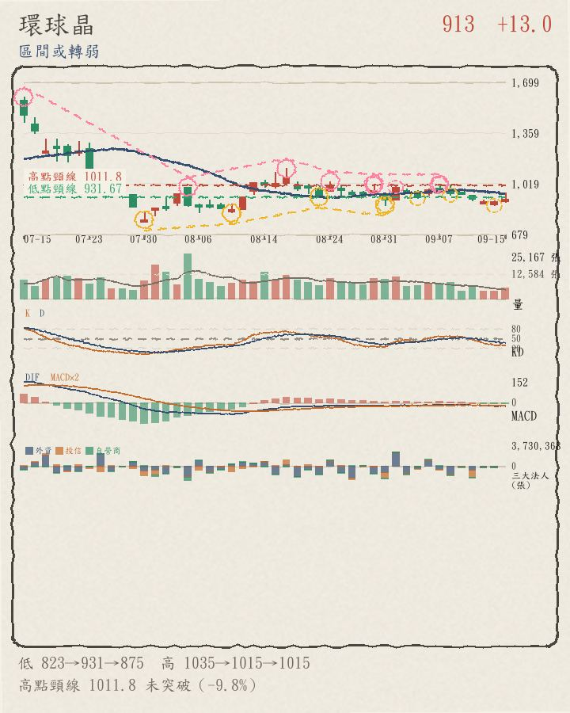
2026/09/15 12:40 盤中 913（+1.44%），相對加權指數 +2.04 個百分點；盤中累計成交值 56.19 億（全榜第 25 名，上櫃第 7 名）。以交易時間比例推估的今日成交量約為 20 日均量的 0.85 倍（量平）。日線結構：區間或轉弱；現價在月線 961.35 之下（-5.0%）。距前一日（9/14）高點 +0.66%，距今日高點 -4.80%、距今日低點 +2.01%。圖為日線，最後一根是今日 12:40 為止的進行中 K 棒。
↑ 回上方清單
日月光投控 3711 上市
596 -16.0（-2.61%）
區間或轉弱 盤中成交值 52.62 億・全榜第 26 名（上市第 19 名）・相對大盤 -2.01
好條件 1/8：月線向上
不好條件 4/8：今日下跌、相對大盤弱、在月線之下、貼近今日低點（1% 內）
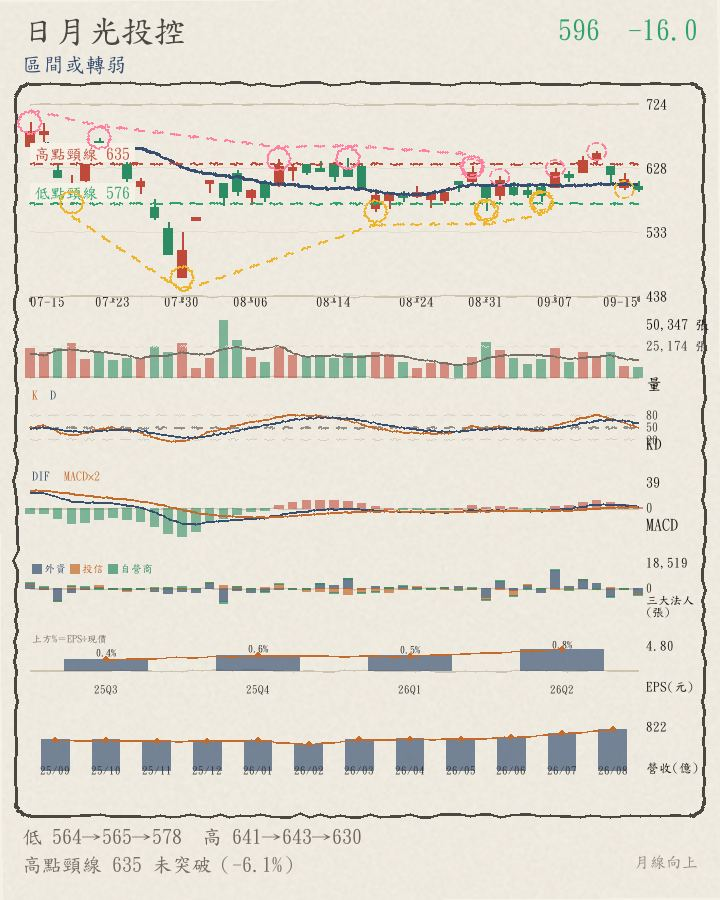
2026/09/15 12:40 盤中 596（-2.61%），相對加權指數 -2.01 個百分點；盤中累計成交值 52.62 億（全榜第 26 名，上市第 19 名）。以交易時間比例推估的今日成交量約為 20 日均量的 0.62 倍（量縮）。日線結構：區間或轉弱；現價在月線 604.2 之下（-1.4%）。距前一日（9/14）高點 -3.87%，距今日高點 -1.97%、距今日低點 +0.51%。圖為日線，最後一根是今日 12:40 為止的進行中 K 棒。
↑ 回上方清單
華新科 2492 上市
301 -4.5（-1.47%）
底部墊高、未過前高 盤中成交值 51.02 億・全榜第 27 名（上市第 20 名）・相對大盤 -0.87
好條件 3/8：站上月線、月線向上、底底高
不好條件 2/8：今日下跌、相對大盤弱
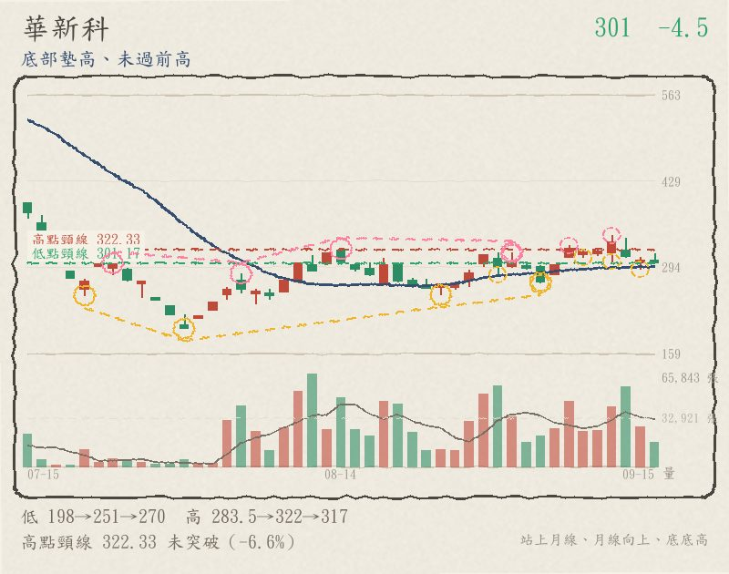
2026/09/15 12:40 盤中 301（-1.47%），相對加權指數 -0.87 個百分點；盤中累計成交值 51.02 億（全榜第 27 名，上市第 20 名）。以交易時間比例推估的今日成交量約為 20 日均量的 0.65 倍（量縮）。日線結構：底部墊高、未過前高；現價在月線 294.6 之上（+2.2%）。距前一日（9/14）高點 -2.75%，距今日高點 -4.60%、距今日低點 +0.00%。圖為日線，最後一根是今日 12:40 為止的進行中 K 棒。
↑ 回上方清單
世芯-KY 3661 上市
3395 -195.0（-5.43%）
區間或轉弱 盤中成交值 50.96 億・全榜第 28 名（上市第 21 名）・相對大盤 -4.83
好條件 0/8：無
不好條件 7/8：跌破前低、今日下跌、相對大盤弱、在月線之下、貼近今日低點（1% 內）、跌破昨日低點、月線下彎
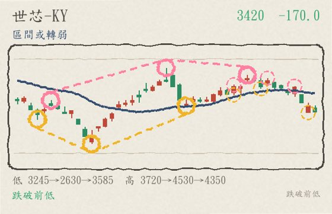
2026/09/15 12:40 盤中 3395（-5.43%），相對加權指數 -4.83 個百分點；盤中累計成交值 50.96 億（全榜第 28 名，上市第 21 名）。以交易時間比例推估的今日成交量約為 20 日均量的 0.84 倍（量平）。日線結構：區間或轉弱；現價在月線 3919 之下（-13.4%）。距前一日（9/14）高點 -7.11%，距今日高點 -5.43%、距今日低點 +0.15%。圖為日線，最後一根是今日 12:40 為止的進行中 K 棒。
↑ 回上方清單
友達 2409 上市
27.8 -0.9（-3.14%）
區間或轉弱 盤中成交值 50.36 億・全榜第 29 名（上市第 22 名）・相對大盤 -2.54
好條件 2/8：站上月線、月線向上
不好條件 4/8：今日下跌、相對大盤弱、貼近今日低點（1% 內）、跌破昨日低點
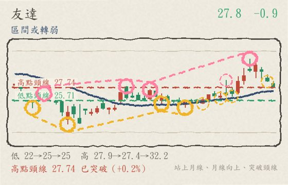
2026/09/15 12:40 盤中 27.8（-3.14%），相對加權指數 -2.54 個百分點；盤中累計成交值 50.36 億（全榜第 29 名，上市第 22 名）。以交易時間比例推估的今日成交量約為 20 日均量的 0.91 倍（量平）。日線結構：區間或轉弱；現價在月線 27.155 之上（+2.4%）。距前一日（9/14）高點 -6.55%，距今日高點 -3.30%、距今日低點 +0.18%。圖為日線，最後一根是今日 12:40 為止的進行中 K 棒。
↑ 回上方清單
台光電 2383 上市
5165 -180.0（-3.37%）
區間或轉弱 盤中成交值 50.15 億・全榜第 30 名（上市第 23 名）・相對大盤 -2.77
好條件 0/8：無
不好條件 7/8：跌破前低、今日下跌、相對大盤弱、在月線之下、貼近今日低點（1% 內）、跌破昨日低點、月線下彎
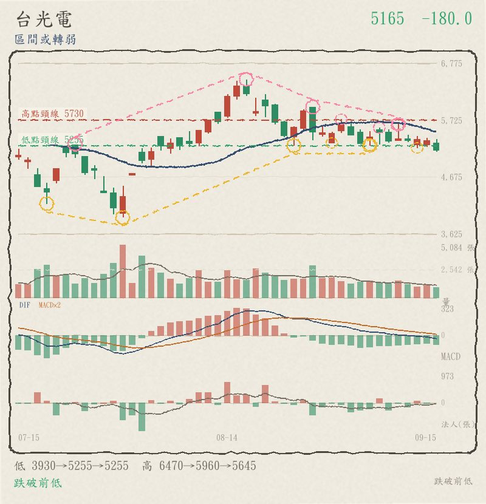
2026/09/15 12:40 盤中 5165（-3.37%），相對加權指數 -2.77 個百分點；盤中累計成交值 50.15 億（全榜第 30 名，上市第 23 名）。以交易時間比例推估的今日成交量約為 20 日均量的 0.67 倍（量縮）。日線結構：區間或轉弱；現價在月線 5561.5 之下（-7.1%）。距前一日（9/14）高點 -4.26%，距今日高點 -3.73%、距今日低點 +0.49%。圖為日線，最後一根是今日 12:40 為止的進行中 K 棒。
↑ 回上方清單
聯茂 6213 上市
521 +6.0（+1.17%）
區間或轉弱 盤中成交值 48.76 億・全榜第 31 名（上市第 24 名）・相對大盤 +1.77
好條件 2/8：月線向上、相對大盤強
不好條件 1/8：在月線之下
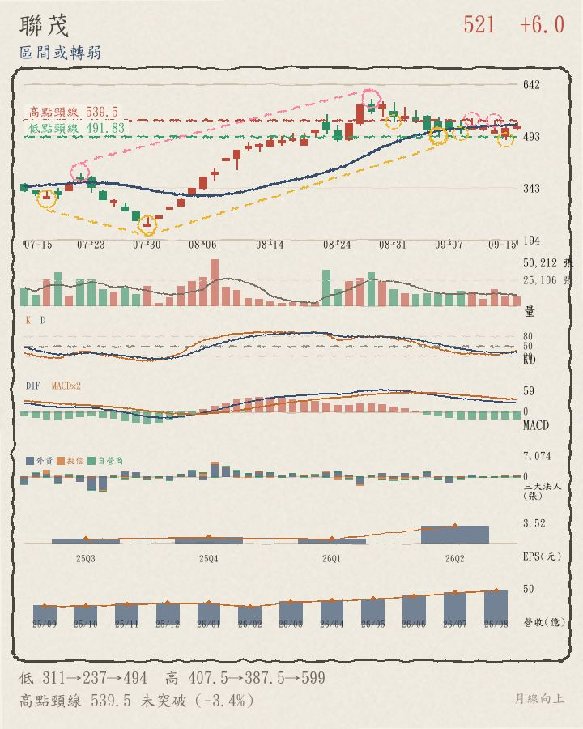
2026/09/15 12:40 盤中 521（+1.17%），相對加權指數 +1.77 個百分點；盤中累計成交值 48.76 億（全榜第 31 名，上市第 24 名）。以交易時間比例推估的今日成交量約為 20 日均量的 0.72 倍（量平）。日線結構：區間或轉弱；現價在月線 524.375 之下（-0.6%）。距前一日（9/14）高點 +0.00%，距今日高點 -1.88%、距今日低點 +1.96%。圖為日線，最後一根是今日 12:40 為止的進行中 K 棒。
↑ 回上方清單
緯穎 6669 上市
2315 +45.0（+1.98%）
上升趨勢（底底高＋頭頭高） 盤中成交值 47.76 億・全榜第 32 名（上市第 25 名）・相對大盤 +2.58
好條件 5/8：月線向上、底底高、頭頭高、突破頸線、相對大盤強
不好條件 1/8：在月線之下
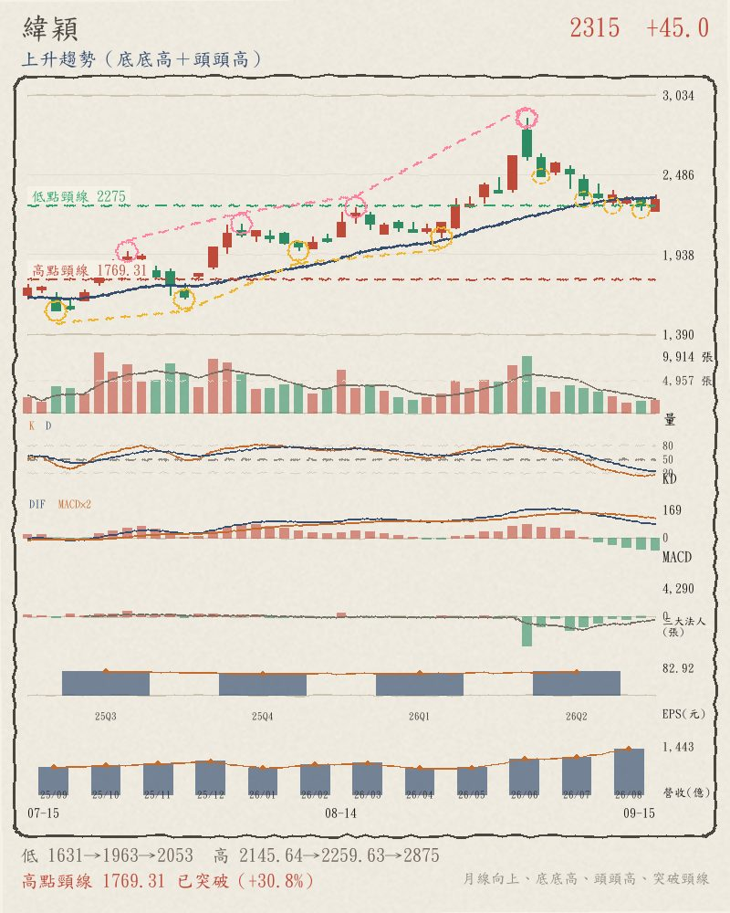
2026/09/15 12:40 盤中 2315（+1.98%），相對加權指數 +2.58 個百分點；盤中累計成交值 47.76 億（全榜第 32 名，上市第 25 名）。以交易時間比例推估的今日成交量約為 20 日均量的 0.61 倍（量縮）。日線結構：上升趨勢（底底高＋頭頭高）；現價在月線 2323.43 之下（-0.4%）。距前一日（9/14）高點 +0.00%，距今日高點 -1.28%、距今日低點 +3.58%。圖為日線，最後一根是今日 12:40 為止的進行中 K 棒。
↑ 回上方清單
聯亞 3081 上櫃
2700 -45.0（-1.64%）
高點墊高、底部不穩 盤中成交值 47.41 億・全榜第 33 名（上櫃第 8 名）・相對大盤 -1.04
好條件 3/8：月線向上、頭頭高、突破頸線
不好條件 3/8：今日下跌、相對大盤弱、在月線之下
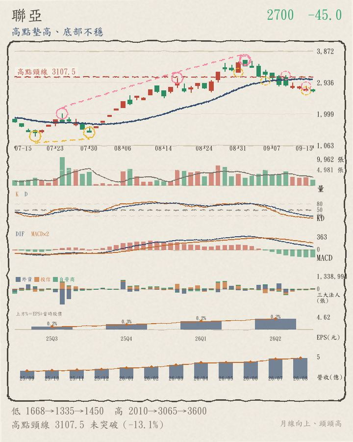
2026/09/15 12:40 盤中 2700（-1.64%），相對加權指數 -1.04 個百分點；盤中累計成交值 47.41 億（全榜第 33 名，上櫃第 8 名）。以交易時間比例推估的今日成交量約為 20 日均量的 0.53 倍（量縮）。日線結構：高點墊高、底部不穩；現價在月線 3038.5 之下（-11.1%）。距前一日（9/14）高點 -4.59%，距今日高點 -1.64%、距今日低點 +1.89%。圖為日線，最後一根是今日 12:40 為止的進行中 K 棒。
↑ 回上方清單
景碩 3189 上市
806 +8.0（+1.00%）
區間或轉弱 盤中成交值 45.61 億・全榜第 34 名（上市第 26 名）・相對大盤 +1.60
好條件 1/8：相對大盤強
不好條件 2/8：在月線之下、月線下彎
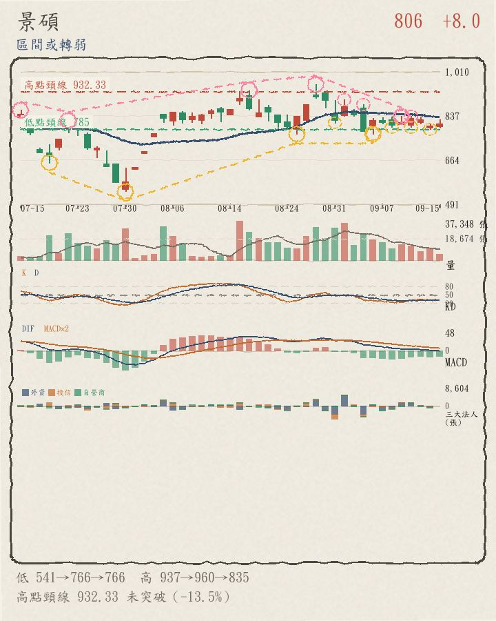
2026/09/15 12:40 盤中 806（+1.00%），相對加權指數 +1.60 個百分點；盤中累計成交值 45.61 億（全榜第 34 名，上市第 26 名）。以交易時間比例推估的今日成交量約為 20 日均量的 0.34 倍（量縮）。日線結構：區間或轉弱；現價在月線 835.25 之下（-3.5%）。距前一日（9/14）高點 -0.49%，距今日高點 -1.95%、距今日低點 +1.90%。圖為日線，最後一根是今日 12:40 為止的進行中 K 棒。
↑ 回上方清單
金像電 2368 上市
980 -40.0（-3.92%）
底部墊高、未過前高 盤中成交值 43.6 億・全榜第 35 名（上市第 27 名）・相對大盤 -3.32
好條件 2/8：月線向上、底底高
不好條件 4/8：跌破前低、今日下跌、相對大盤弱、在月線之下
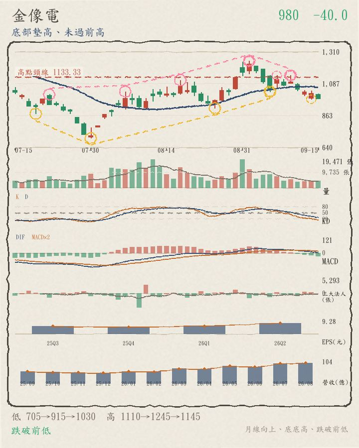
2026/09/15 12:40 盤中 980（-3.92%），相對加權指數 -3.32 個百分點；盤中累計成交值 43.6 億（全榜第 35 名，上市第 27 名）。以交易時間比例推估的今日成交量約為 20 日均量的 0.68 倍（量縮）。日線結構：底部墊高、未過前高；現價在月線 1065.95 之下（-8.1%）。距前一日（9/14）高點 -5.31%，距今日高點 -3.45%、距今日低點 +0.00%。圖為日線，最後一根是今日 12:40 為止的進行中 K 棒。
↑ 回上方清單
貿聯-KY 3665 上市
2015 +60.0（+3.07%）
區間或轉弱 盤中成交值 42.15 億・全榜第 36 名（上市第 28 名）・相對大盤 +3.67
好條件 2/8：相對大盤強、守住今日高檔（距今日高點 1% 內）
不好條件 2/8：在月線之下、月線下彎
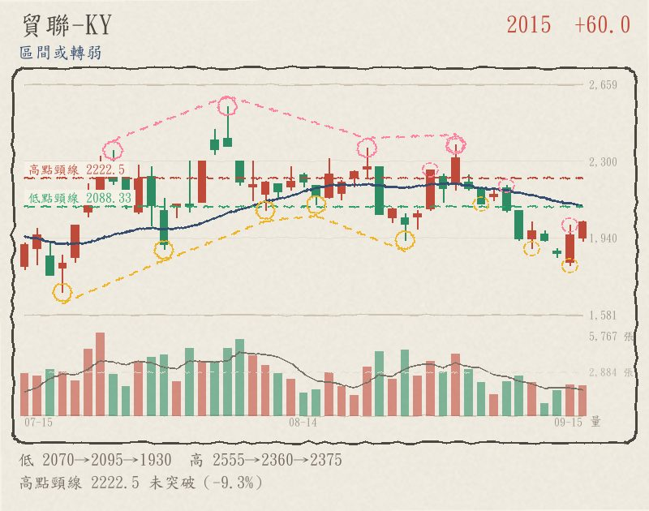
2026/09/15 12:40 盤中 2015（+3.07%），相對加權指數 +3.67 個百分點；盤中累計成交值 42.15 億（全榜第 36 名，上市第 28 名）。以交易時間比例推估的今日成交量約為 20 日均量的 0.95 倍（量平）。日線結構：區間或轉弱；現價在月線 2102.5 之下（-4.2%）。距前一日（9/14）高點 +0.75%，距今日高點 -0.25%、距今日低點 +4.68%。圖為日線，最後一根是今日 12:40 為止的進行中 K 棒。
↑ 回上方清單
富喬 1815 上櫃
116 -4.0（-3.33%）
區間或轉弱 盤中成交值 39.73 億・全榜第 37 名（上櫃第 9 名）・相對大盤 -2.73
好條件 3/8：站上月線、月線向上、突破頸線
不好條件 3/8：今日下跌、相對大盤弱、跌破昨日低點
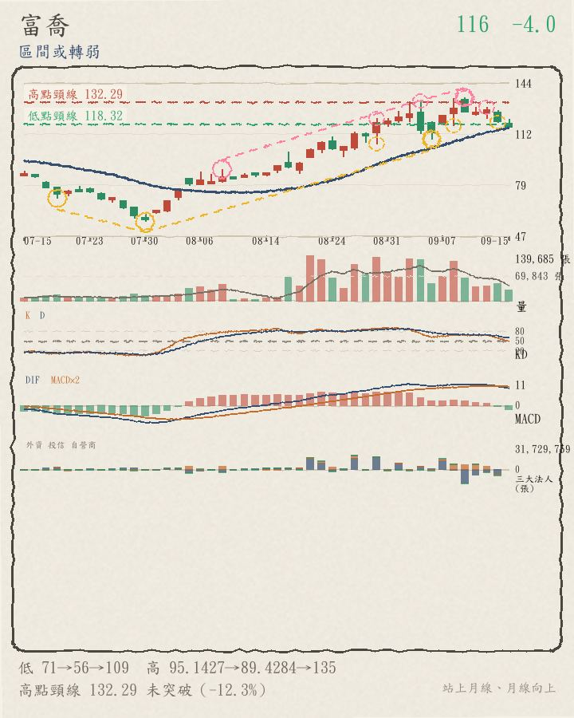
2026/09/15 12:40 盤中 116（-3.33%），相對加權指數 -2.73 個百分點；盤中累計成交值 39.73 億（全榜第 37 名，上櫃第 9 名）。以交易時間比例推估的今日成交量約為 20 日均量的 0.51 倍（量縮）。日線結構：區間或轉弱；現價在月線 114.442 之上（+1.4%）。距前一日（9/14）高點 -8.66%，距今日高點 -4.53%、距今日低點 +0.00%。圖為日線，最後一根是今日 12:40 為止的進行中 K 棒。
↑ 回上方清單
光寶科 2301 上市
275 -2.5（-0.90%）
上升趨勢（底底高＋頭頭高） 盤中成交值 37.74 億・全榜第 38 名（上市第 29 名）・相對大盤 -0.30
好條件 3/8：月線向上、底底高、頭頭高
不好條件 5/8：跌破前低、今日下跌、相對大盤弱、在月線之下、貼近今日低點（1% 內）
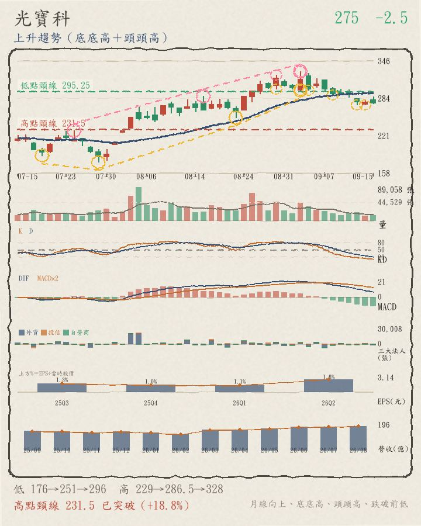
2026/09/15 12:40 盤中 275（-0.90%），相對加權指數 -0.30 個百分點；盤中累計成交值 37.74 億（全榜第 38 名，上市第 29 名）。以交易時間比例推估的今日成交量約為 20 日均量的 0.52 倍（量縮）。日線結構：上升趨勢（底底高＋頭頭高）；現價在月線 291.95 之下（-5.8%）。距前一日（9/14）高點 -2.31%，距今日高點 -3.85%、距今日低點 +0.36%。圖為日線，最後一根是今日 12:40 為止的進行中 K 棒。
↑ 回上方清單
台虹 8039 上市
272.5 -1.5（-0.55%）
底部墊高、未過前高 盤中成交值 37.41 億・全榜第 39 名（上市第 30 名）・相對大盤 +0.05
好條件 3/8：月線向上、底底高、相對大盤強
不好條件 4/8：跌破前低、今日下跌、在月線之下、貼近今日低點（1% 內）
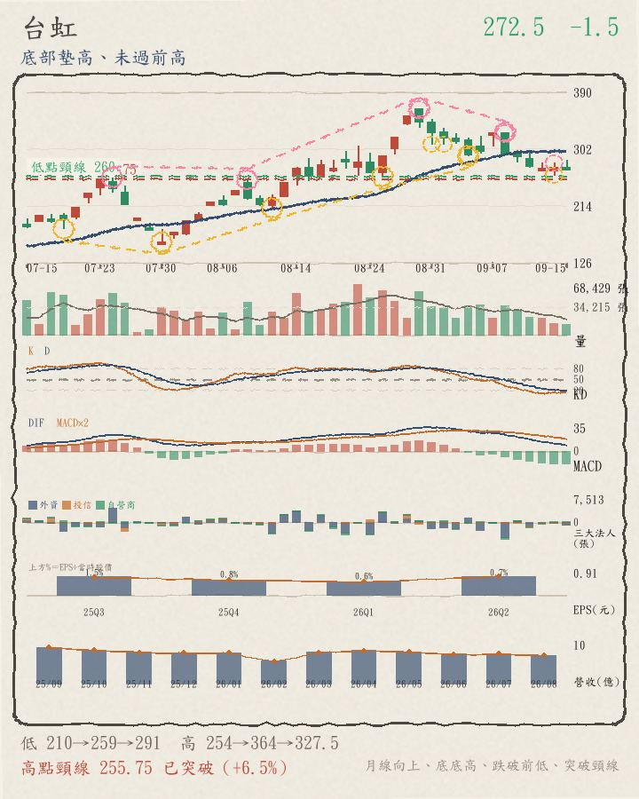
2026/09/15 12:40 盤中 272.5（-0.55%），相對加權指數 +0.05 個百分點；盤中累計成交值 37.41 億（全榜第 39 名，上市第 30 名）。以交易時間比例推估的今日成交量約為 20 日均量的 0.44 倍（量縮）。日線結構：底部墊高、未過前高；現價在月線 298.45 之下（-8.7%）。距前一日（9/14）高點 -2.68%，距今日高點 -4.39%、距今日低點 +0.93%。圖為日線，最後一根是今日 12:40 為止的進行中 K 棒。
↑ 回上方清單
雙鴻 3324 上櫃
1270 -35.0（-2.68%）
區間或轉弱 盤中成交值 36.97 億・全榜第 40 名（上櫃第 10 名）・相對大盤 -2.08
好條件 2/8：站上月線、月線向上
不好條件 5/8：跌破前低、今日下跌、相對大盤弱、貼近今日低點（1% 內）、跌破昨日低點
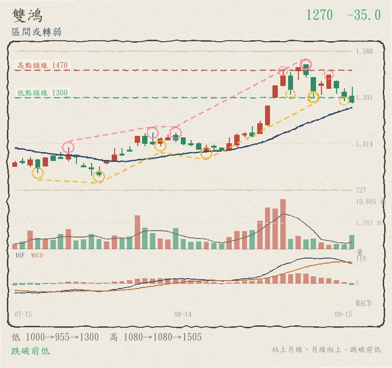
2026/09/15 12:40 盤中 1270（-2.68%），相對加權指數 -2.08 個百分點；盤中累計成交值 36.97 億（全榜第 40 名，上櫃第 10 名）。以交易時間比例推估的今日成交量約為 20 日均量的 1.07 倍（量平）。日線結構：區間或轉弱；現價在月線 1222.45 之上（+3.9%）。距前一日（9/14）高點 -6.27%，距今日高點 -6.96%、距今日低點 +0.40%。圖為日線，最後一根是今日 12:40 為止的進行中 K 棒。
↑ 回上方清單
合晶 6182 上櫃
106 +2.5（+2.42%）
區間或轉弱 盤中成交值 36.84 億・全榜第 41 名（上櫃第 11 名）・相對大盤 +3.02
好條件 1/8：相對大盤強
不好條件 2/8：在月線之下、月線下彎
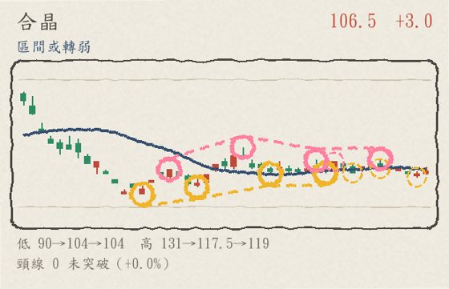
2026/09/15 12:40 盤中 106（+2.42%），相對加權指數 +3.02 個百分點；盤中累計成交值 36.84 億（全榜第 41 名，上櫃第 11 名）。以交易時間比例推估的今日成交量約為 20 日均量的 0.72 倍（量平）。日線結構：區間或轉弱；現價在月線 109.225 之下（-3.0%）。距前一日（9/14）高點 +0.47%，距今日高點 -4.07%、距今日低點 +2.91%。圖為日線，最後一根是今日 12:40 為止的進行中 K 棒。
↑ 回上方清單
全友 2305 上市
45.25 +0.1（+0.22%）
區間或轉弱 盤中成交值 35.18 億・全榜第 42 名（上市第 31 名）・相對大盤 +0.82
好條件 5/8：站上月線、月線向上、突破頸線、相對大盤強、攻擊量（量增＋上漲）
不好條件 0/8：無
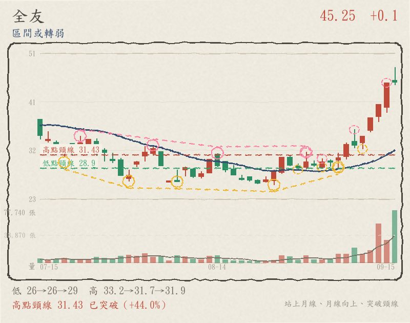
2026/09/15 12:40 盤中 45.25（+0.22%），相對加權指數 +0.82 個百分點；盤中累計成交值 35.18 億（全榜第 42 名，上市第 31 名）。以交易時間比例推估的今日成交量約為 20 日均量的 9.51 倍（爆量）。日線結構：區間或轉弱；現價在月線 31.408 之上（+44.1%）。距前一日（9/14）高點 +0.22%，距今日高點 -5.83%、距今日低點 +1.23%。圖為日線，最後一根是今日 12:40 為止的進行中 K 棒。
↑ 回上方清單
禾伸堂 3026 上市
730 -1.0（-0.14%）
區間或轉弱 盤中成交值 34.05 億・全榜第 43 名（上市第 32 名）・相對大盤 +0.46
好條件 3/8：站上月線、月線向上、相對大盤強
不好條件 2/8：今日下跌、貼近今日低點（1% 內）
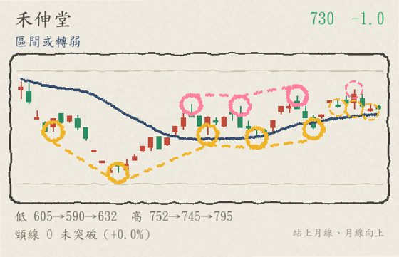
2026/09/15 12:40 盤中 730（-0.14%），相對加權指數 +0.46 個百分點；盤中累計成交值 34.05 億（全榜第 43 名，上市第 32 名）。以交易時間比例推估的今日成交量約為 20 日均量的 0.66 倍（量縮）。日線結構：區間或轉弱；現價在月線 703.05 之上（+3.8%）。距前一日（9/14）高點 -3.57%，距今日高點 -2.54%、距今日低點 +0.14%。圖為日線，最後一根是今日 12:40 為止的進行中 K 棒。
↑ 回上方清單
光頡 3624 上櫃
122.5 -1.5（-1.21%）
區間或轉弱 盤中成交值 32.41 億・全榜第 44 名（上櫃第 12 名）・相對大盤 -0.61
好條件 3/8：站上月線、月線向上、突破頸線
不好條件 3/8：今日下跌、相對大盤弱、量增下跌（出貨）
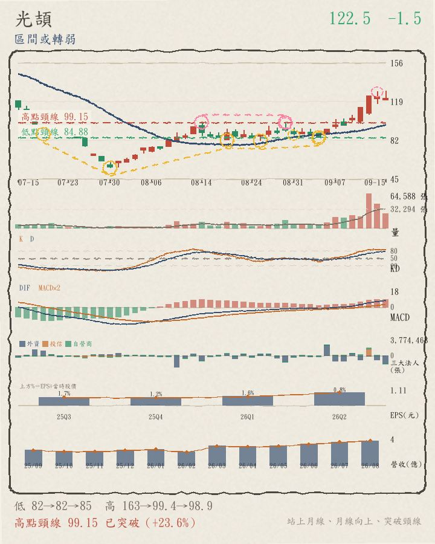
2026/09/15 12:40 盤中 122.5（-1.21%），相對加權指數 -0.61 個百分點；盤中累計成交值 32.41 億（全榜第 44 名，上櫃第 12 名）。以交易時間比例推估的今日成交量約為 20 日均量的 2.68 倍（爆量）。日線結構：區間或轉弱；現價在月線 95.03 之上（+28.9%）。距前一日（9/14）高點 -4.67%，距今日高點 -5.41%、距今日低點 +1.24%。圖為日線，最後一根是今日 12:40 為止的進行中 K 棒。
↑ 回上方清單
台勝科 3532 上市
406.5 -9.5（-2.28%）
上升趨勢（底底高＋頭頭高） 盤中成交值 31.14 億・全榜第 45 名（上市第 33 名）・相對大盤 -1.68
好條件 4/8：站上月線、月線向上、底底高、頭頭高
不好條件 3/8：今日下跌、相對大盤弱、貼近今日低點（1% 內）
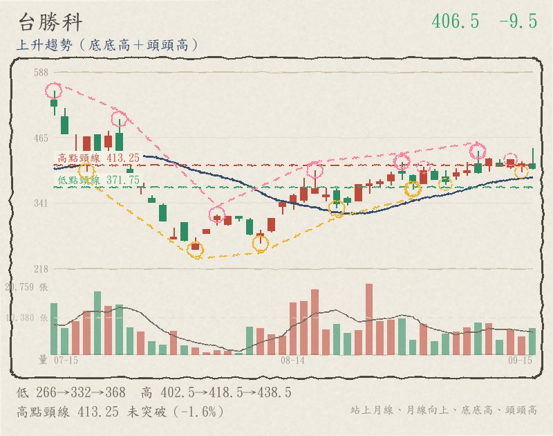
2026/09/15 12:40 盤中 406.5（-2.28%），相對加權指數 -1.68 個百分點；盤中累計成交值 31.14 億（全榜第 45 名，上市第 33 名）。以交易時間比例推估的今日成交量約為 20 日均量的 1.03 倍（量平）。日線結構：上升趨勢（底底高＋頭頭高）；現價在月線 387.925 之上（+4.8%）。距前一日（9/14）高點 -2.98%，距今日高點 -8.45%、距今日低點 +0.37%。圖為日線，最後一根是今日 12:40 為止的進行中 K 棒。
↑ 回上方清單
群聯 8299 上櫃
1950 +15.0（+0.78%）
底部墊高、未過前高 盤中成交值 31.04 億・全榜第 46 名（上櫃第 13 名）・相對大盤 +1.38
好條件 3/8：底底高、相對大盤強、守住今日高檔（距今日高點 1% 內）
不好條件 3/8：跌破前低、在月線之下、月線下彎
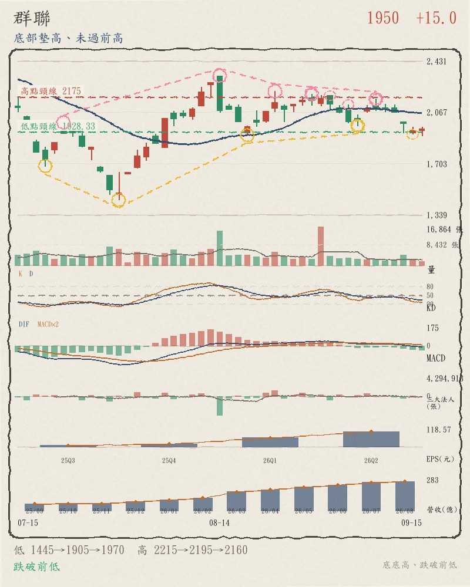
2026/09/15 12:40 盤中 1950（+0.78%），相對加權指數 +1.38 個百分點；盤中累計成交值 31.04 億（全榜第 46 名，上櫃第 13 名）。以交易時間比例推估的今日成交量約為 20 日均量的 0.47 倍（量縮）。日線結構：底部墊高、未過前高；現價在月線 2065.5 之下（-5.6%）。距前一日（9/14）高點 -0.51%，距今日高點 -0.51%、距今日低點 +2.63%。圖為日線，最後一根是今日 12:40 為止的進行中 K 棒。
↑ 回上方清單
聯鈞 3450 上市
499 -10.0（-1.96%）
高點墊高、底部不穩 盤中成交值 30.39 億・全榜第 47 名（上市第 34 名）・相對大盤 -1.36
好條件 2/8：月線向上、頭頭高
不好條件 4/8：今日下跌、相對大盤弱、在月線之下、貼近今日低點（1% 內）
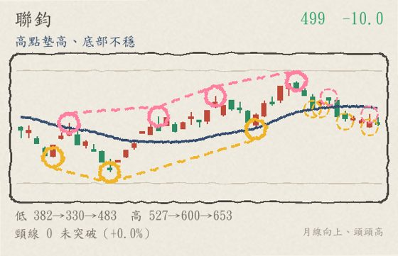
2026/09/15 12:40 盤中 499（-1.96%），相對加權指數 -1.36 個百分點；盤中累計成交值 30.39 億（全榜第 47 名，上市第 34 名）。以交易時間比例推估的今日成交量約為 20 日均量的 0.72 倍（量平）。日線結構：高點墊高、底部不穩；現價在月線 563 之下（-11.4%）。距前一日（9/14）高點 -6.73%，距今日高點 -4.77%、距今日低點 +0.81%。圖為日線，最後一根是今日 12:40 為止的進行中 K 棒。
↑ 回上方清單
中信金 2891 上市
69.4 +1.3（+1.91%）
上升趨勢（底底高＋頭頭高） 盤中成交值 29.84 億・全榜第 48 名（上市第 35 名）・相對大盤 +2.51
好條件 7/8：站上月線、月線向上、底底高、頭頭高、相對大盤強、攻擊量（量增＋上漲）、守住今日高檔（距今日高點 1% 內）
不好條件 0/8：無
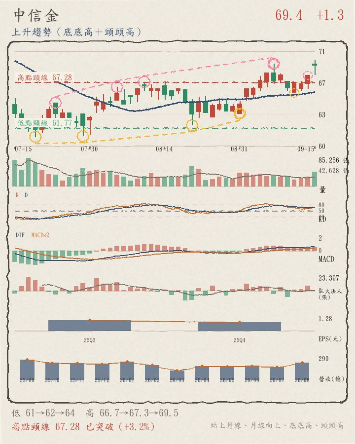
2026/09/15 12:40 盤中 69.4（+1.91%），相對加權指數 +2.51 個百分點；盤中累計成交值 29.84 億（全榜第 48 名，上市第 35 名）。以交易時間比例推估的今日成交量約為 20 日均量的 1.72 倍（爆量）。日線結構：上升趨勢（底底高＋頭頭高）；現價在月線 65.955 之上（+5.2%）。距前一日（9/14）高點 +1.91%，距今日高點 -0.72%、距今日低點 +1.76%。圖為日線，最後一根是今日 12:40 為止的進行中 K 棒。
↑ 回上方清單
旺矽 6223 上櫃
5470 -125.0（-2.23%）
區間或轉弱 盤中成交值 27.51 億・全榜第 49 名（上櫃第 14 名）・相對大盤 -1.63
好條件 1/8：站上月線
不好條件 4/8：今日下跌、相對大盤弱、貼近今日低點（1% 內）、月線下彎
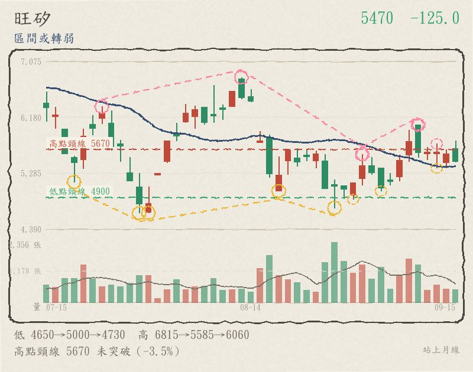
2026/09/15 12:40 盤中 5470（-2.23%），相對加權指數 -1.63 個百分點；盤中累計成交值 27.51 億（全榜第 49 名，上櫃第 14 名）。以交易時間比例推估的今日成交量約為 20 日均量的 0.53 倍（量縮）。日線結構：區間或轉弱；現價在月線 5386.5 之上（+1.6%）。距前一日（9/14）高點 -3.36%，距今日高點 -5.69%、距今日低點 +0.18%。圖為日線，最後一根是今日 12:40 為止的進行中 K 棒。
↑ 回上方清單
雍智科技 6683 上櫃
1450 +115.0（+8.61%）
高點墊高、底部不穩 盤中成交值 27.04 億・全榜第 50 名（上櫃第 15 名）・相對大盤 +9.21
好條件 5/8：站上月線、月線向上、頭頭高、相對大盤強、攻擊量（量增＋上漲）
不好條件 0/8：無
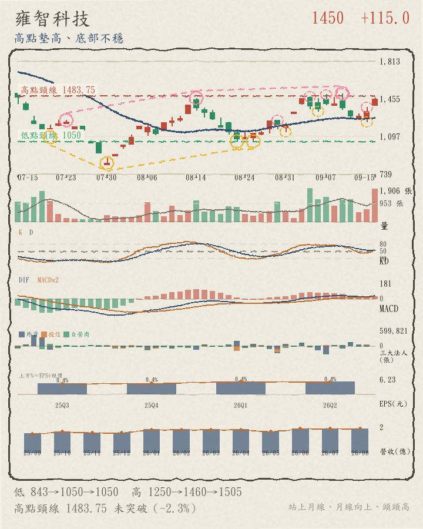
2026/09/15 12:40 盤中 1450（+8.61%），相對加權指數 +9.21 個百分點；盤中累計成交值 27.04 億（全榜第 50 名，上櫃第 15 名）。以交易時間比例推估的今日成交量約為 20 日均量的 2.85 倍（爆量）。日線結構：高點墊高、底部不穩；現價在月線 1265.25 之上（+14.6%）。距前一日（9/14）高點 +5.45%，距今日高點 -1.02%、距今日低點 +4.32%。圖為日線，最後一根是今日 12:40 為止的進行中 K 棒。
↑ 回上方清單
← 回股市觀察